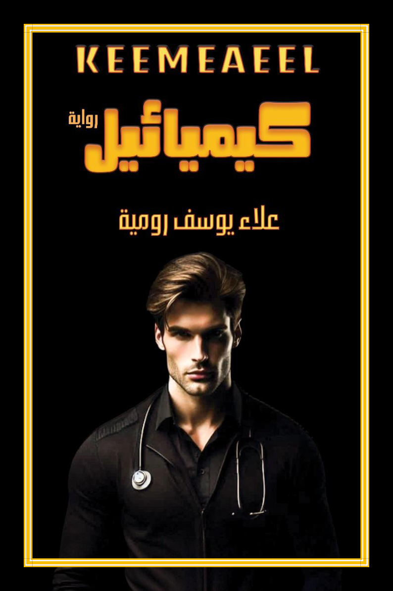

ميكائيل
طبيب تتقاطع تجربته الإنسانية والمهنية مع سلسلة من الوقائع الغامضة، ويصبح البحث عن الإجابات جزءًا من مصيره.
حين تتشابك مصائر البشر مع الأسرار، يصبح البحث عن الحقيقة رحلةً بين الظلام والنور، وبين الخوف والأمل.

«كيميائيل» رواية غموض وتشويق ذات أبعاد نفسية وإنسانية، تتقاطع فيها مصائر ميكائيل وأيلول ويوسف مع حكايات الفقد والنجاة، وتنكشف تدريجيًا أسرار الحانوت والمفاتيح والدهليز.
في عالم تنحسر فيه الحدود بين المألوف والمجهول، يتداخل الخوف مع الأمل، وتصبح الأسئلة أحيانًا أثقل من الإجابات.
بين الظلام والنوركيميائيل · KEEMEAEEL
تبدأ الحكاية…
طبيب تتقاطع تجربته الإنسانية والمهنية مع سلسلة من الوقائع الغامضة، ويصبح البحث عن الإجابات جزءًا من مصيره.
شخصية فاعلة في الأحداث، تجمع خيوطًا بين الماضي والحاضر، وتجد نفسها أمام مواقف تختبر شجاعتها.
حياة قاسية وتجارب فقد وحرمان، تترك أثرًا إنسانيًا عميقًا في مسار الحكاية.
مكان يبدو مألوفًا، لكنه يرتبط بجانب من أسرار الحكاية.
تفاصيل صغيرة تفتح أبوابًا لأسئلة أكبر.
فضاء سردي تتضاعف عنده الحيرة والتشويق.
رواية علاء يوسف رومية. رحلة سردية تتقاطع فيها الدراما الإنسانية مع الغموض، ويظل فيها الوصول إلى النور رهين البحث والصبر.
تحميل مجاني للجزء الأول بصيغة PDF · 376 صفحة · الملف بحجم يقارب 6.7 ميغابايت.